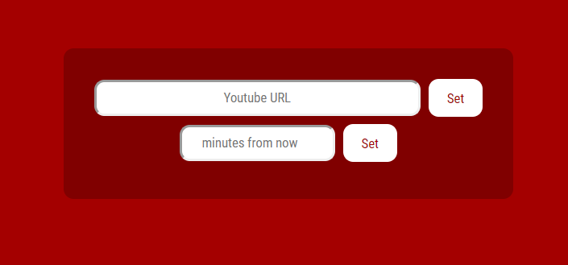

<div id="projects">
    <a target="_blank" href="https://drakeywakey.github.io/YoutubeAlarm/index.html">
        <aside>
            
            <h3>Youtube Alarm</h3>
            <p>A project in React using Webpack and LESS. Punch in a youtube url, give it a time (in minutes) 
                and set the alarm -- do your thing, and when the time has elapsed, it'll play that video.
                Sort of useful for a Pomodoro timer
            </p>
            <h4><a href="https://github.com/drakeywakey/reactalarm">Source code</a></h4>
        </aside>
    </a>
    <a target="_blank" href="https://drakeywakey.github.io/people">
        <aside>
            
            <h3>FindEm</h3>
            <p>An Angular project, the idea is basically just a searchable catalog of people.
                You can increase the time it takes to populate the list, simulating
                a delay from the server, showing a way I thought the UI could act "gracefully" during the wait.
            </p>
            <h4><a href="https://github.com/drakeywakey/FindEmTests">Source code</a></h4>
        </aside>
    </a>
    <a target="_blank" href="https://drakeywakey.github.io/Reactodo">
        <aside id="Reactodo">
            
            <h3>Reactodo</h3>
            <p>Possibly the "Hello World" of web development, here's a todo list keeper, written in React.
                It was also my first use of CSS grid! (if your browser supports it, otherwise it falls back to flexbox)
                Uses local storage on the browser to persist data
            </p>
            <h4><a href="https://github.com/drakeywakey/Reactodo">Source code</a></h4>
        </aside>
    </a>
</div>